Remote PC Wake-on-LAN
Remotely waking up a PC using an Orange Pi via Tailscale network, forwarding a Magic Packet to the PC.

Orange Pi Zero 3 Gateway
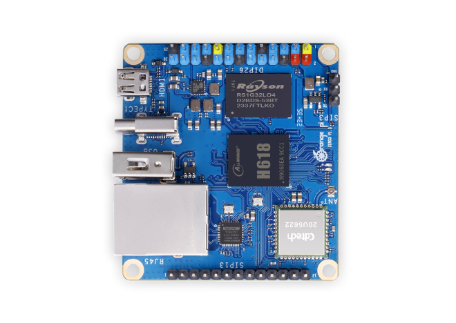
The Orange Pi Zero 3 is an ultra-compact, high-performance single-board computer (SBC) powered by an Allwinner H618 Quad-core processor. Designed as an affordable and highly efficient mini PC, it functions much like a Raspberry Pi but in a much smaller footprint. It runs a full Linux environment, making it an excellent platform for learning networking, building IoT projects, or managing a home lab without consuming much physical space or electricity.
In this project, the Orange Pi Zero 3 acts as the reliable, always-on gateway for the Remote Wake-on-LAN architecture. By staying permanently connected to the Mikrotik router, it bridges the gap between the external internet and the local home network. It runs Tailscale, a zero-config VPN based on WireGuard, which creates a secure tunnel allowing remote devices to communicate with the Orange Pi from anywhere in the world without requiring complex port forwarding rules.
Once an SSH connection to the Orange Pi is established via the Tailscale network, we can securely broadcast a Magic Packet to the target PC. A simple command or script specifies the PC's MAC address and dispatches the Wake-on-LAN signal through the local router, seamlessly powering on the computer from a cold state. Below is a snapshot of the SSH login process into the Orange Pi environment.
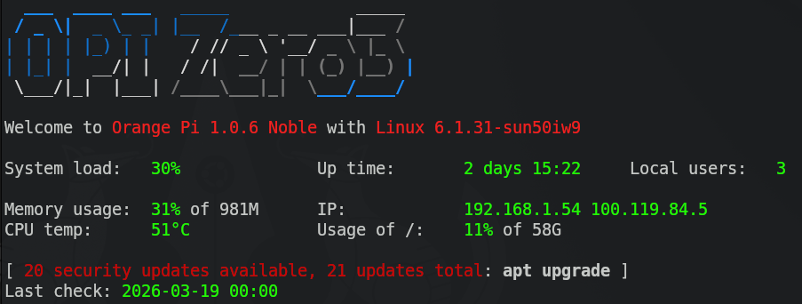
Network Topology
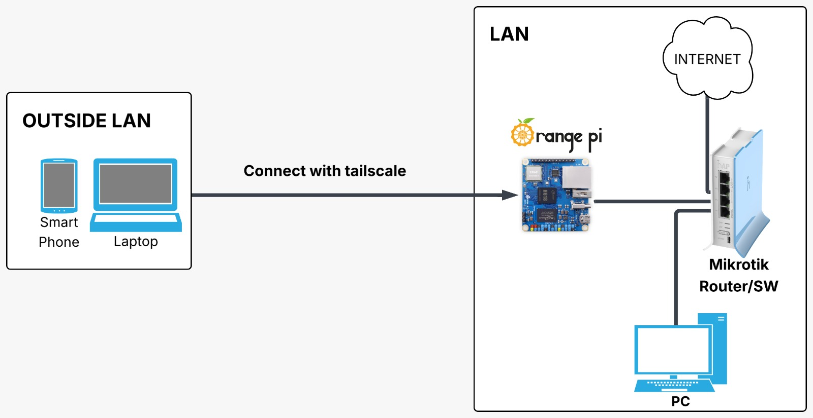
Installing the Wakeonlan Package
To send the Magic Packet, we need to install the wakeonlan package on the Orange Pi. You
can easily install it using the APT package manager by running sudo apt install wakeonlan
in the terminal. The video below demonstrates the installation process and how the command is executed
to wake up the target PC.
Installing Tailscale
Tailscale is a zero-config VPN that creates a secure tunnel, allowing remote access to the Orange Pi from anywhere. Below are the steps to install and configure it:
- Go to the Tailscale download page, select Linux (since the Orange Pi runs on a Linux distribution), and copy the provided installation command.
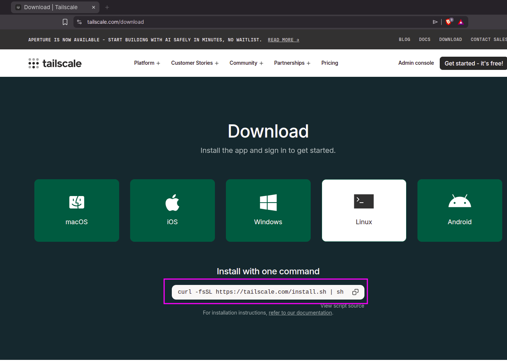
- Paste the copied command into your Orange Pi SSH terminal and wait for the installation process to complete.
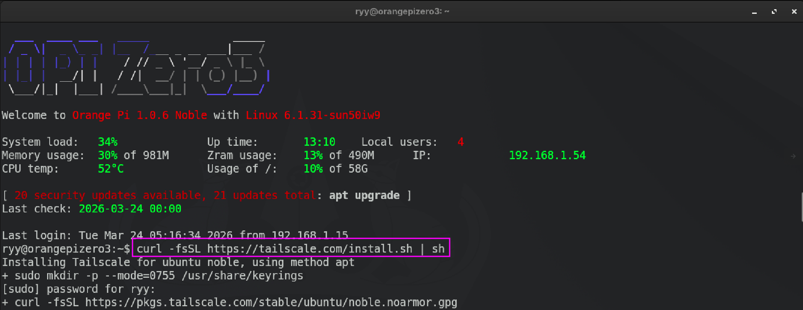
- Once installed, run
sudo tailscale upto initiate the service. The terminal will output an authentication URL.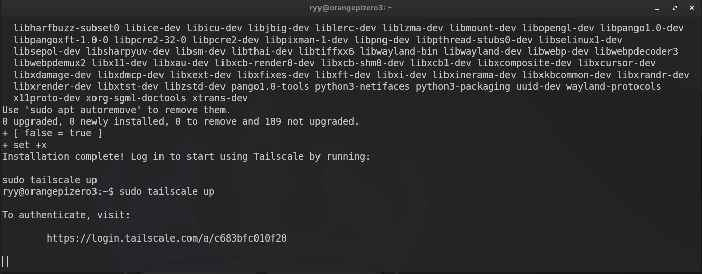
- Copy and paste the generated URL into your web browser to proceed with device authentication.
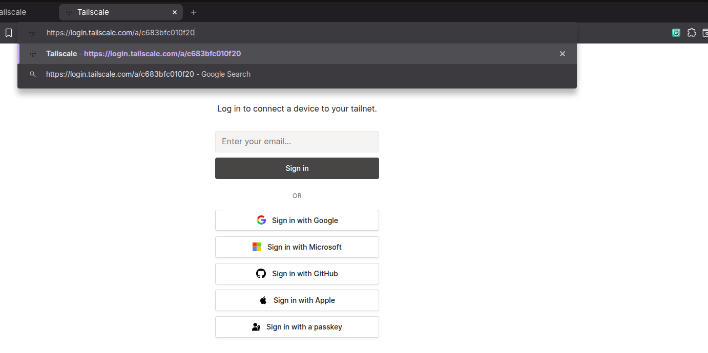
- Select your preferred login method (for example, logging in with a Google account) and follow the prompts to sign in.
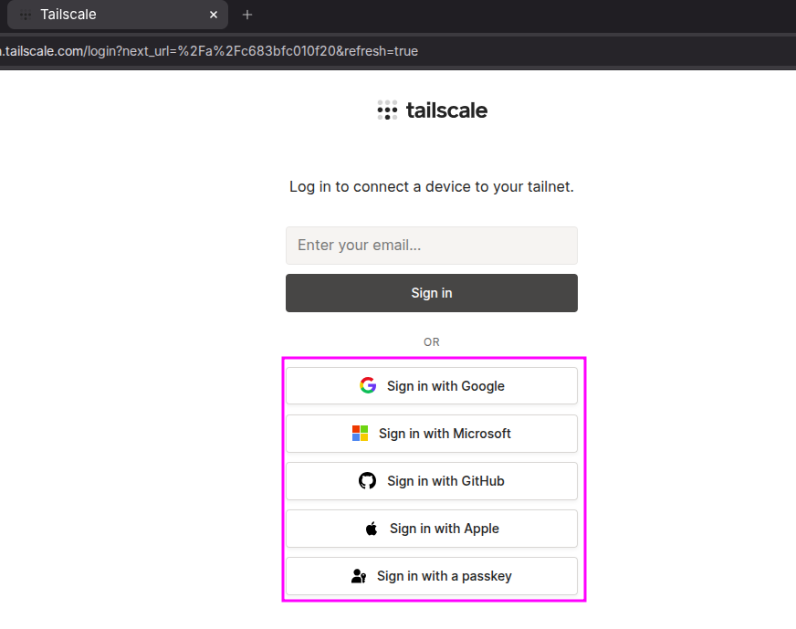
- Upon successful authentication, a confirmation screen will appear indicating that the device is successfully connected.
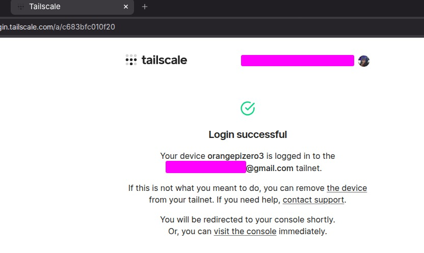
- Finally, you can visit the Tailscale admin console to view the Orange Pi and all other devices registered to your secured network.
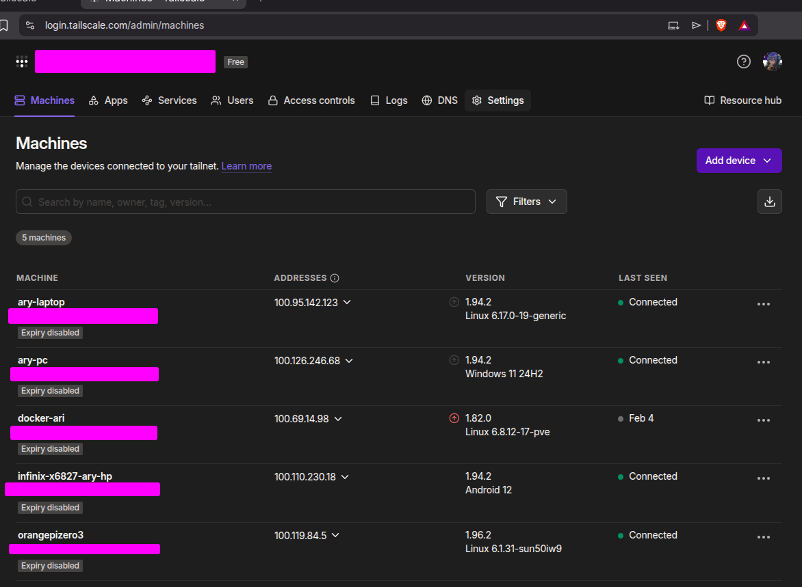
Enable Wake on LAN on PC (Windows)
- Open Device Manager -> Network Adapters then select the LAN driver
currently in use.

- Go to the Advanced tab and look for "Wake on Magic Packet", then
set it
to "Enabled".
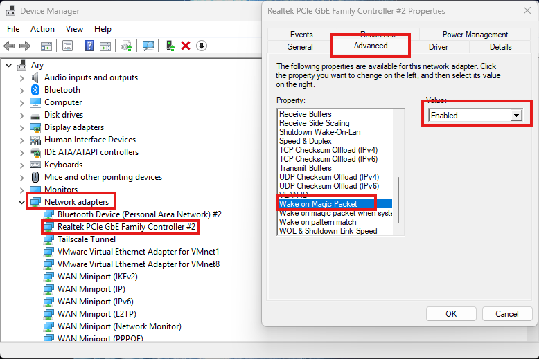
- Go to the Power Management tab and check "Allow the computer to turn off
this
device to save power" as well as allow the device to wake the computer.
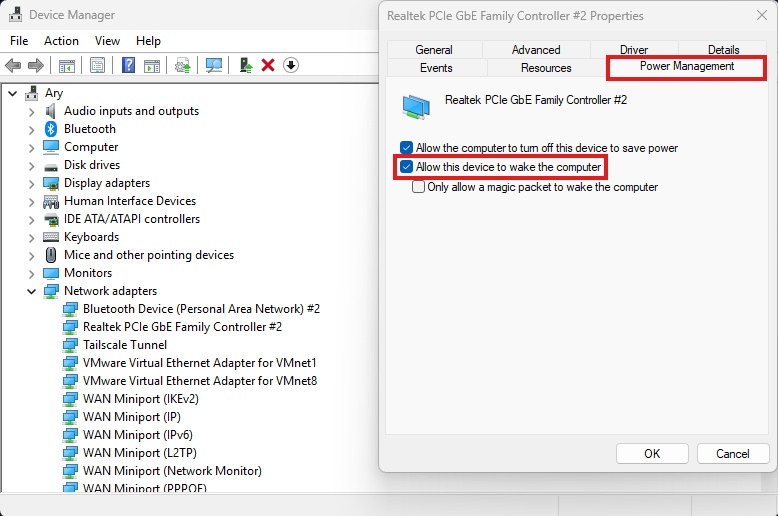
- Go to Power Options (in Control Panel), click "Choose what the power
buttons do", select "Change settings that are currently unavailable",
then disable "Turn on fast startup" and Save changes.
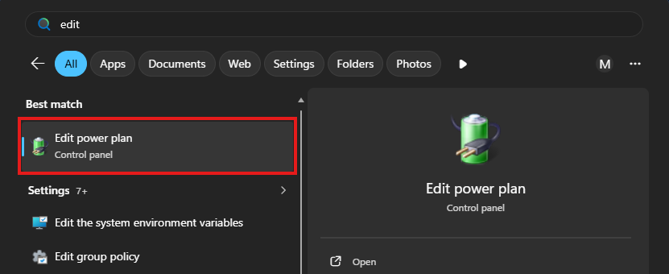
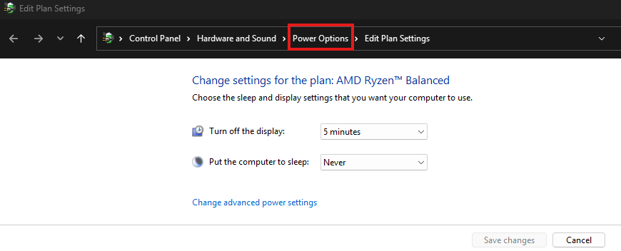
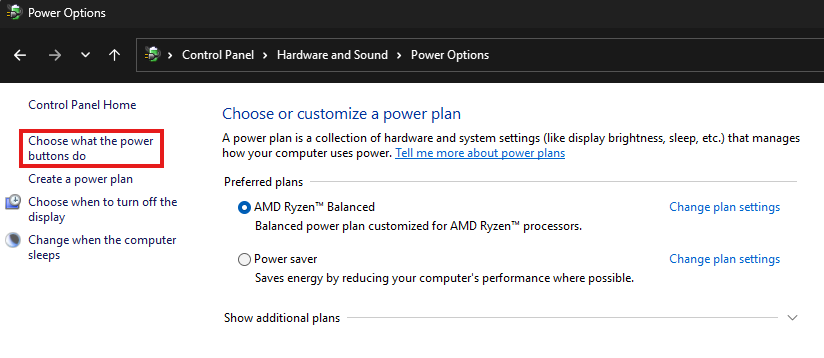


Setting Wake On LAN in PC BIOS
(Case study using MSI B350 Tomahawk)
- Go to Advanced, select "Power Management Setup"
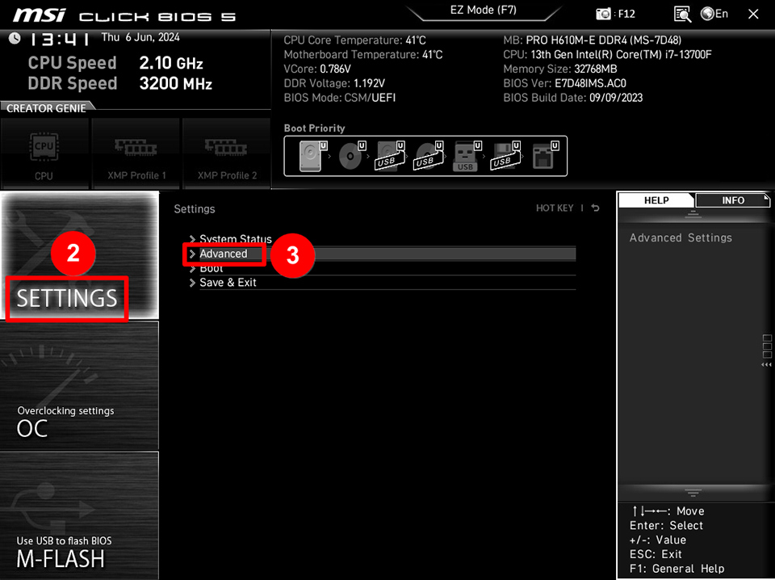
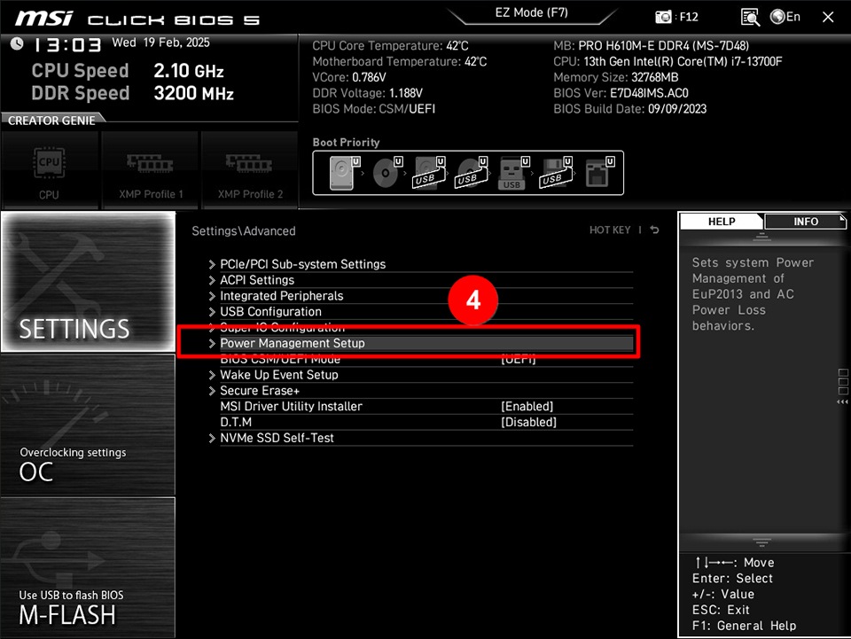
- Disable ErP Ready
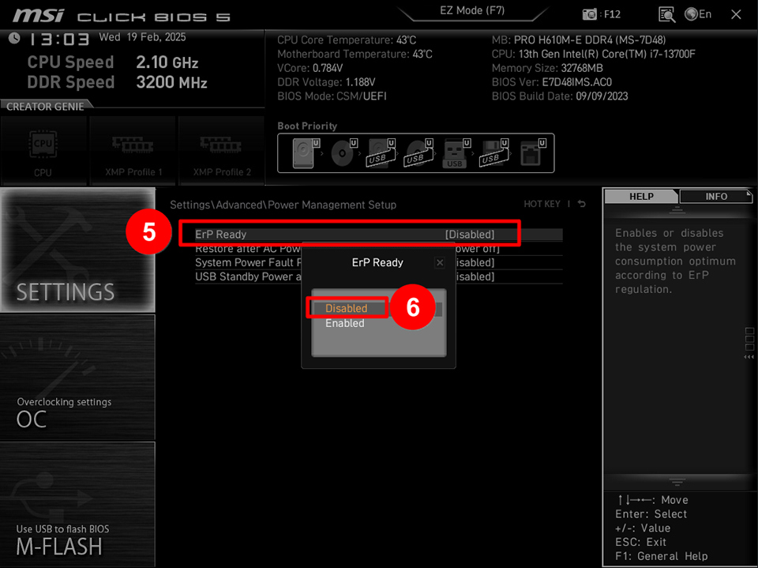
- Disable ErP Ready
- Go to Wake Up Event Setup
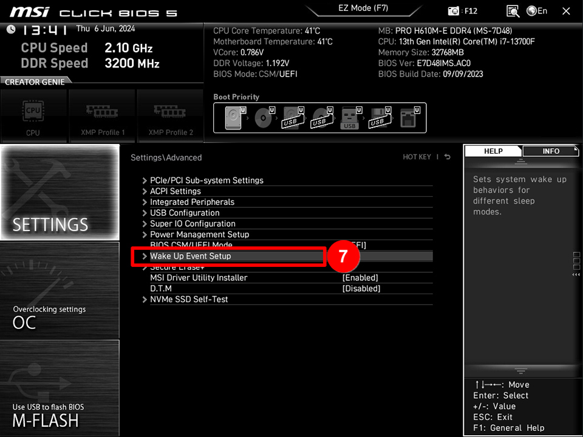
- Enable Resume by PCI/PCI-E
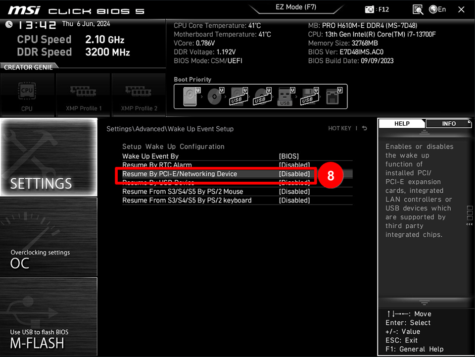
- Enable Resume by PCI/PCI-E
Finding the MAC Address & Final Test
Before sending the Magic Packet from the Orange Pi, you need to determine the MAC address (Physical Address) of your PC's Ethernet adapter.
- Open the Command Prompt on your Windows PC and type
ipconfig /all. Locate the active Ethernet adapter connected to your home network and note down its Physical Address.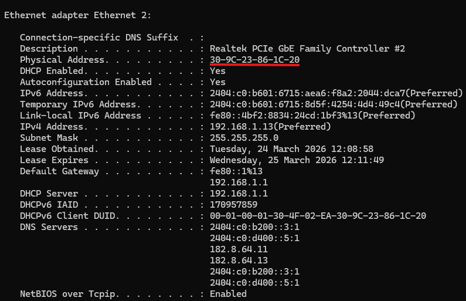
Now that you have the MAC address and your Orange Pi is accessible via Tailscale SSH, log in to the Orange Pi terminal and execute the final wake command: wakeonlan <Your-MAC-Address>. The video below demonstrates this entire process, successfully turning on the PC from an off state remotely!